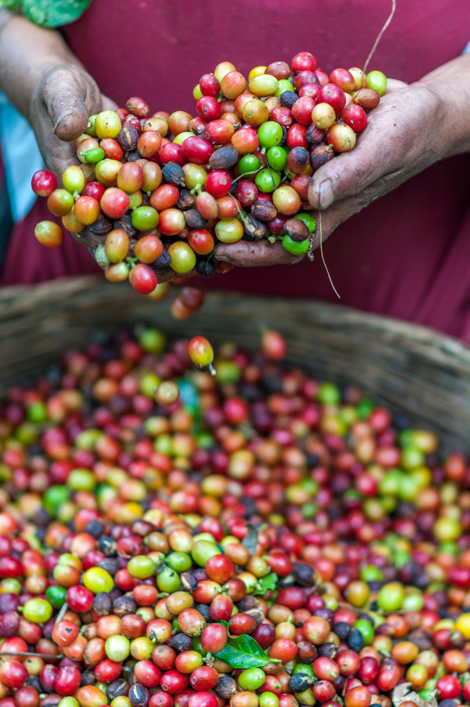
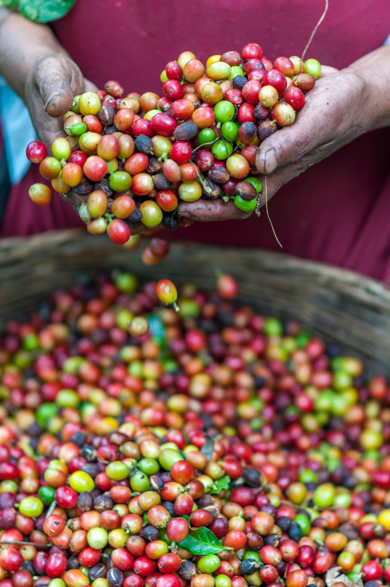

Do you know who invented Coffee?
Coffee grown worldwide can trace its heritage back centuries to the ancient coffee forests on the Ethiopian plateau. There, legend says the goat herder Kaldi first discovered the potential of these beloved beans. The story goes that that Kaldi discovered coffee after he noticed that after eating the berries from a certain tree, his goats became so energetic that they did not want to sleep at night.
Kaldi reported his findings to the abbot of the local monastery, who made a drink with the berries and found that it kept him alert through the long hours of evening prayer. The abbot shared his discovery with the other monks at the monastery, and knowledge of the energizing berries began to spread. As word moved east and coffee reached the Arabian peninsula, it began a journey which would bring these beans across the globe.

 
